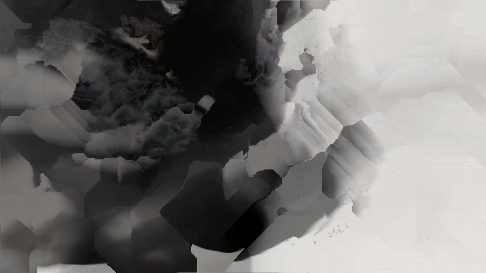
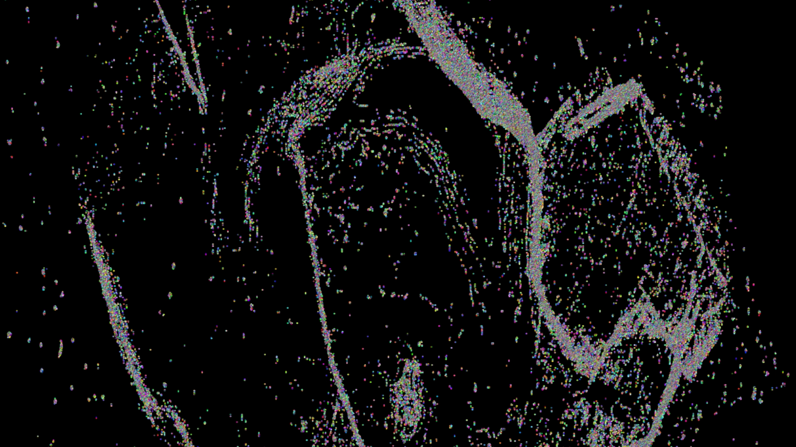
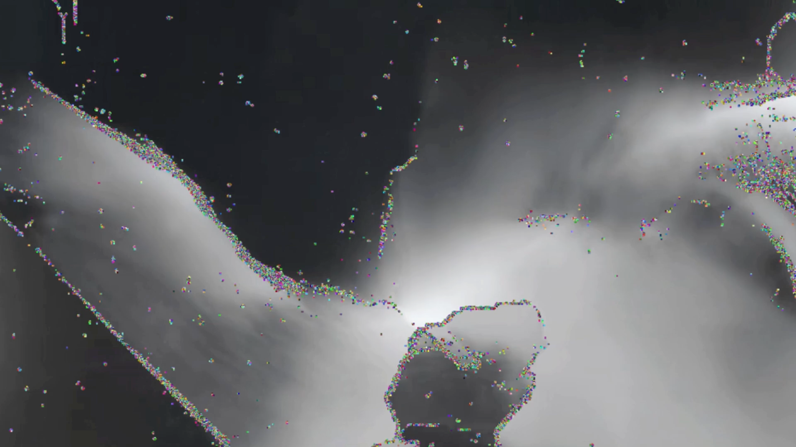

«The Information of Void» thematisiert die Bedeutung von «Leere» als Medium und Information.
Ausgehend von Medientheorie und Bildexperimenten zu den Zitaten «Voids generated by a break» and «breaks generated by void» wurde ein Konzept entwickelt, das die «Void» erlebbar macht. Dabei wurde eng mit der Literatur von Rosa Menkman und Marshall McLuhan gearbeitet. Die von Menkman und McLuhan eingeführten Begriffe «break» und «void» im Sinne von «Kante/Bruch» oder «Aufbrechen» und «Leere/Leerraum» dienten als Grundlage für die experimentelle Auseinandersetzung mit dem Thema.
Ausgangsmaterial für das Projekt sind Fotogramme aus dem Fotolabor. Auch hierbei wurde mit dem Begriff «break» gearbeitet. Durch zerknüllen von Verpackungsmaterial entstanden Kanten. Unter der längerer Belichtungszeit brachen die Kanten auf und es entstanden abstrakte Formen mit neuen Flächen und Kanten.
In einem weiteren Schritt wurden die Bilder in einem neuen Medium (Animation) aufgebrochen. Dadurch entstanden dynamische Objekte die unterschiedlichste Assoziationen beim Betrachter auslösen.
«They put in everything they know,
rather than only what they see.» – McLuhan
Dieses Zitat McLuhans beschreibt, dass die aus der Void aufgebrochenen Formen mehr sind als nur Abstraktion. Der Betrachter erkennt nämlich mehr, als zu erkennen ist. Er projiziert sein Wissen auf das Bild und erkennt Formen, Flächen und Linien, die unvollständig sind. Er vervollständigt sie, zieht sie weiter und sieht Zusammenhänge mit der Struktur seines Wissens. Die gegebene Information verknüpft sich mit dem Wissen des Betrachters und formt wiederum ein Wissen, das dem Betrachter bekannt ist.
In einem nächsten Schritt wurden die animierten Bilder mittels Code auf Kanten untersucht. In diesem Schritt der Abstraktion (The Computers point of View) sind nur diejenigen Elemente im Bild zu erkennen, die der Computer als Information identifiziert.

Here noise exists within the void opposite to what (already) has a meaning. Whichever way noise is defined, the negative definition also has a positive consequence: it helps by (re)defining its opposite (the world of meaning, the norm, regulation, goodness, beauty and so on). – Rosa Menkman
Der Betrachter sieht und erkennt in einem Bild. Der Computer selbst geht nicht von der Information, die dem Betrachter zugänglich gemacht wird, aus. Er unterscheidet nicht «Vordergrund» und «Hintergrund» oder «Objekt» und «Nicht-Objekt», «Information» und «Nicht-Information». Was für den Betrachter als Leere erscheint, wird vom Computer gleich wie die Nicht-Leere gewichtet, denn er klassifiziert das Bild lediglich in Tonwertdifferenzen.
Die dritte Ebene zeigt sowohl die aufgebrochenen Formen als auch die «Edge Detection» durch den Code. Durch die Kombination von «What the Observer sees» und «The Computers point of View» wird die Frage nach dem tatsächlichen Inhalt gestellt.

«This gives me an opportunity to concentrate better on its form - to interpret its
structures and to learn more from what I can actually see.» – Rosa Menkmam
In den Bildern entsteht Leerraum. Doch die Grenzen dessen werden durch den Betrachter gegeben. Denn was ist genau der Leerraum? Ist es die schwarze oder die weisse Fläche? Kann der Leerraum überhaupt als «Fläche» bezeichnet werden?
Der Leerraum ist einerseits eine Abgrenzung, andererseits ermöglicht er ein Eröffnen und Aufbrechen von Information. Durch Leerraum wird erst gefüllter Raum erkannt, wodurch Information entdeckt werden kann.
Durch das Berühren und Verknüpfen der Bedeutungsebene wird also Information generiert. Dabei hat «void» - die leeren Formen - der gleiche Stellenwert wie die Information, da dieser die Informationen abgrenzt.
So verknüpfen sich die Informationsteile eines Buchstaben mit den Informationsteile auf einem Bildschirm, um schlussendlich schwarz auf weiss einen Text abzubilden. Dabei berührt jede Information eine andere, ob Inhalt oder Nicht-Inhalt, und generiert so neue Information.
